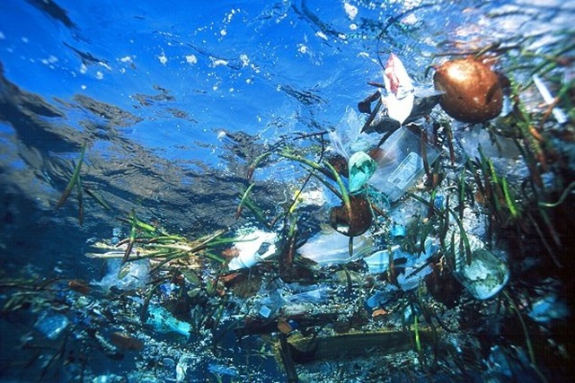

Конкурс на тему "Креативная работа посвящённая океану"
Описание
Ваша работа должна быть посвящена океану. Мировой океан — глобальный объём морской воды, основная часть гидросферы, среды обитания большинства организмов на нашей планете. Водная среда обитания (Водная оболочка нашей планеты) - совокупность океанов, морей, вод континентов, ледниковых покровов. В более широком смысле в состав гидросферы включают также подземные воды, лед и снег Арктики и Антарктики, а также атмосферную воду и воду, содержащуюся в живых организмах.
Конкурсанты могут сами определить какой тип работы подавать на участие в конкурсе, но работа должна быть направленна на решение проблемы загрязнения океана, это может быть: рисунок, стих, сочинение, видео, презентация или любая другая творческая работа.

Призы:
Участники, занявщим I, II и III места, будут высланы дипломы, в электронном виде, на E-mail указанынй в бланке участника.
Все участники, не занявщие призовые места, получат поощрительный приз - грамоту участника.
Требования к участникам:
В конкурсе могут принимать участие:
- Работы должны быть отправлены не позднее 18.10.2017.
- Группы (до 10 человек), или одиночные участники;
- Ученики 6-9 классов и ученики 10-11 классов;
Участие в конкурсе бесплатное, для участия необходимо отправить бланк участника. У учеников должен быть куратор, обычно в роли куратора выступает школьный учитель или один из учеников. Все работы должны быть уникальными и оригинальными.
Конкурс на тему "Забота об экосистеме океана"
Описание
Конкурс посвящен заботе об экосистеме океана. Весь мир обеспокоен загрязнением океана, которое угрожает морской живности, нашей окружающей среде, экономике и здоровью людей.
Мусор, выбрасываемый в океан, постепенно сбивается в так называемые "мусорные острова" и дрейфует по Тихому океану. Под действием природных сил мусор, в частности пластик, дробится на микрочастицы, которые могут быть съедены морскими обитателями. В организме животных мусор может отравлять организм. К примеру, частички пластика могут случайно обнаружится в рыбе, которую вы заказали себе на обед в ресторане.

Призы:
Участники, занявщим I, II и III места, будут высланы дипломы, в электронном виде, на E-mail указанынй в бланке участника.
Все участники, не занявщие призовые места, получат поощрительный приз - грамоту участника.
Требования к участникам:
Работы должны быть отправлены не позднее 12.05.2017.
В конкурсе могут принимать участие:
- Группы (до 10 человек) или одиночные участники;
- Ученики 6-9 классов и ученики 10-11 классов;
Участие в конкурсе бесплатное, для участия необходимо отправить бланк участника. У учеников должен быть куратор, обычно в роли куратора выступает школьный учитель или один из учеников. Все работы должны быть уникальными и оригинальными.
Результаты:
- I место - команда "Дельфин";
- II место - команда "ЭКОСПТЕП";
- III место - команда "Помоги океану!";
Благадарим всех за участие. Все участники получили поощрительные грамоты, призёрам (командам "Дельфин", "ЭКОСПТЕП", "Помоги океану!") достались дипломы I, II, III степени.